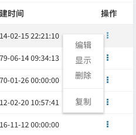
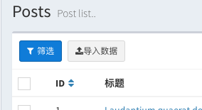
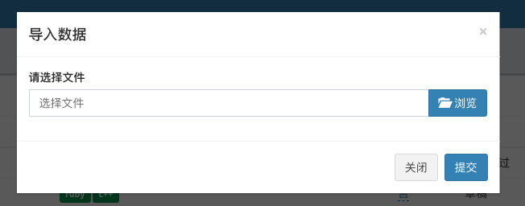
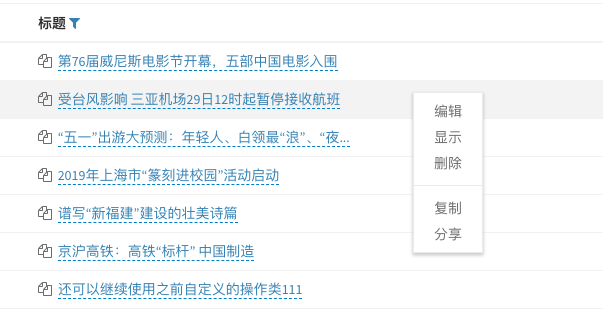

Custom Row & Batch action
Since v1.7.3
The v1.7.3 version refactors the row actions and batch action of the data grid, and the row actions of the data are reconstructed into drop-down menu actions:

In this form, it is more convenient to extend the row action. The mechanism after refactoring can make you more elegant and custom data actions.
By default, the data table has 3 row actions Edit, View and Delete and a Batch Delete action. Refer to the following to customize your data action.
Row action
Suppose you want to add a copy action to the article list. After clicking and copying the data of this line, run the following command to generate the action class:
Php artisan admin:action Post\\Replicate --grid-row --name="copy"The class name is specified as
Post\\Replicate, just to put this action class under thePostnamespace, you can specify any space according to your module.
The above command will generate the class file app/Admin/Actions/Post/Replicate.php:
<?php
namespace App\Admin\Actions\Post;
use Encore\Admin\Actions\RowAction;
use Illuminate\Database\Eloquent\Model;
class Replicate extends RowAction
{
public $name = 'copy';
public function handle(Model $model)
{
// $model ...
return $this->response()->success('Success message.')->refresh();
}
}The commit of the action will handle by the handle method in the class, so we only need to simply modify the logic of the handle method:
public function handle(Model $model)
{
// Here the model's `replicate` method is called to copy the data, then call the `save` method to save it.
$model->replicate()->save();
// return a success message with the content "copy success" and refresh the page
return $this->response()->success('copy success.')->refresh();
}The first parameter $model of the handle method is the Eloquent model of the current row data, which can be manipulated directly.
The final step is to add to the grid:
use App\Admin\Actions\Post\Replicate;
$grid->actions(function ($actions) {
$actions->add(new Replicate);
});This is added to the action drop-down menu:

Page redirection
If your row action just click to jump to another page:
<?php
namespace Encore\Admin\Grid\Actions;
use Encore\Admin\Actions\RowAction;
class Comments extends RowAction
{
public $name = 'View comments';
/**
* @return string
*/
public function href()
{
return "/your/uri/path";
}
}In the href method, you can use $this->getResource() to get the current resource root path. You can use $this->getKey() to get the primary key value of the current row.
Batch action
Suppose you want to add a batch copy action, first run the following command to generate a batch action class:
Php artisan admin:action Post\\BatchReplicate --grid-batch --name="batch copy"Generate the class file app/Admin/Actions/Post/BatchReplicate.php:
<?php
namespace App\Admin\Actions\Post;
use Encore\Admin\Actions\BatchAction;
use Illuminate\Database\Eloquent\Collection;
class BatchReplicate extends BatchAction
{
public $name = 'batch copy';
public function handle(Collection $collection)
{
foreach ($collection as $model) {
// ...
}
return $this->response()->success('Success message...')->refresh();
}
}Similarly, we only need to simply modify the logic of the handle method:
public function handle(Collection $collection)
{
// copy the data model for each row
foreach ($collection as $model) {
$model->replicate()->save();
}
/ / return a success message of "copy success" and refresh the page
return $this->response()->success('copy success.')->refresh();
}Add to the batch action:
$grid->batchActions(function ($batch) {
$batch->add(new BatchReplicate());
});Then select a few rows of data in the list, click on it to see the new batch copy:
{kind=link}
Interaction
When you click on an action, you will often need to make some confirmations or fill in additional data. There are two ways to interact:
Popup dialogue box
For example, the above copy action, after clicking, you need to pop up a dialog box to confirm the action, add a dialog method to the class:
public function dialog()
{
$this->confirm('Are you sure to copy this row?');
}In this way, after clicking Copy, the following confirmation box will pop up, and the action will be submitted after confirmation.

Popup form
Suppose that the 'topic list' has a report action. After clicking, you need to pop up a form, fill in the type and reason of the report, and refer to the following method:
Add the following code to the action class:
public function form()
{
$type = [
1 => 'Advertising',
2 => 'Illegal',
3 => 'Fishing',
];
$this->checkbox('type', 'type')->options($type);
$this->textarea('reason', 'reason')->rules('required');
}When the action is clicked, a form form pops up:

In the handle method, we need to add a second parameter to get the form value:
use Illuminate\Http\Request;
public function handle(Model $model, Request $request)
{
// Get the `type` value in the form
$request->get('type');
/ / Get the `reason` value in the form
$request->get('reason');
// Your reporting logic...
return $this->response()->success('Report submitted]'->refresh();
}The current method support for the form reference:
public function form()
{
// text input box
$this->text('name', 'Placeholder...')->rules('required|min:10');
// Email input box
$this->email('name', 'Placeholder...');
// IP input box
$this->ip('name', 'Placeholder...');
// URL input box
$this->url('name', 'Placeholder...');
// password input box
$this->password('name', 'Placeholder...');
// mobile phone number input box
$this->mobile('name', 'Placeholder...');
// text field input box
$this->textarea('name', 'Placeholder...');
// Single box
$this->select('name', 'Placeholder...')->options([]);
// Checkbox
$this->multipleSelect('name', 'Placeholder...')->options([]);
// Checkbox
$this->checkbox('name', 'Placeholder...')->options([]);
// Radio
$this->radio('name', 'Placeholder...')->options([]);
// upload files
$this->file('name', 'Placeholder...');
// upload image
$this->image('name', 'Placeholder...');
// time and date selection
$this->datetime('name', 'Placeholder...');
// date selection
$this->date('name', 'Placeholder...');
// time selection
$this->time('name', 'Placeholder...');
// hide
$this->hidden('name');
}Grid Tools
Custom actions, in addition to being displayed in the action column of the data table and in the drop-down menu of the batch action, can also be displayed in the tool area of the table (Filter button line)
Batch action
If you want to put the button for the batch action in the tool area instead of the drop-down menu for the batch action, you need to make some changes to the action class:
<?php
namespace App\Admin\Actions\Post;
use Encore\Admin\Actions\BatchAction;
use Illuminate\Database\Eloquent\Collection;
use Illuminate\Http\Request;
class ReportPost extends BatchAction
{
protected $selector = '.report-posts';
public function handle(Collection $collection, Request $request)
{
foreach ($collection as $model) {
//
}
return $this->response()->success('Report submitted!')->refresh();
}
public function form()
{
$this->checkbox('type', 'type')->options([]);
$this->textarea('reason', 'reason')->rules('required');
}
public function html()
{
return "<a class='report-posts btn btn-sm btn-danger'><i class='fa fa-info-circle'></i>Report</a>";
}
}The value of $selector corresponds to the button CSS selector in the html method. Click the 'Report' button to submit the action.
Then add it to the toolbar of the form:
$grid->tools(function (Grid\Tools $tools) {
$tools->append(new ReportPost());
});The display effect is as follows:

Normal action
Suppose you need to add an 'Import Data` button to the header of the form. After clicking, pop up the form upload file to import the data. Refer to the steps below.
Create a normal action class by running the following command:
Php artisan admin:action Post\\ImportPost --name="import data"The generated class file app/Admin/Actions/Post/ImportPost.php:
<?php
namespace App\Admin\Actions\Post;
use Encore\Admin\Actions\Action;
use Illuminate\Http\Request;
class ImportPost extends Action
{
protected $selector = '.import-post';
public function handle(Request $request)
{
// $request ...
return $this->response()->success('Success message...')->refresh();
}
public function html()
{
return <<<HTML
<a class="btn btn-sm btn-default import-post">Import data</a>
HTML;
}
}Modify this class to provide the ability to upload files and add logic to process the data:
<?php
namespace App\Admin\Actions\Post;
use Encore\Admin\Actions\Action;
use Illuminate\Http\Request;
class ImportPost extends Action
{
public $name = 'import data';
protected $selector = '.import-post';
public function handle(Request $request)
{
// The following code gets the uploaded file, then uses the package `maatwebsite/excel` to process and upload your file and save it to the database.
$request->file('file');
return $this->response()->success('Import complete!')->refresh();
}
public function form()
{
$this->file('file', 'Please select file');
}
public function html()
{
return <<<HTML
<a class="btn btn-sm btn-default import-post"><i class="fa fa-upload"></i>Import data</a>
HTML;
}
}

Response
Here's an example of the simplest return:
return $this->response()->success('Success!');After the action class is processed, return a `Success! The success of ``s tips, here are a few other types of returns:
/ / Handling errors
Try {
// Processing logic...
return $this->response()->success('success...');
} catch (Exception $e) {
return $this->response()->error('generating error: '.$e->getMessage());
}
// return prompt message
return $this->response()->info('prompt information...');
// return warning message
return $this->response()->warning('warning information...');Refresh the page after returning:
return $this->response()->success('Success!')->refresh();Redirect to other pages after returning:
return $this->response()->success('Success!')->redirect('/admin/users');Download the file after returning:
return $this->response()->success('Success!')->download('http://www.xxx.com/file.zip');The toastr message is displayed at the top center by default. You can modify its display position in the following ways:
`php
// display on top right
return $ this->response()->topRight()->success('Success!')->refresh();
// display in the middle of the bottom
return $this->response()->bottomCenter()->error('Error!')->refresh();
`
The display position control methods are topCenter,topLeft, topRight,bottomLeft, bottomCenter,bottomRight, topFullWidth,bottomFullWidth.
The toastr message disappears after 5 seconds by default. You can control the disappearance time by the timeout method:
`php // disappears after 3 seconds return $this->response()->success('Success!')->timeout(3000)->refresh(); `
Permission control
Since v1.7.6
If you need to do the permission control after the action is submitted and before being processed, add an authorize method to the operation class by referring to the following method:
public function authorize($user, $model)
{
return false;
}The first parameter is the current operation user model, the second parameter is the data model or model collection of the current column, and the authorize method controls whether or not to interrupt the execution of the operation by returning true or false.
Context-menu actions

As shown in the figure above, the action column does not appear in the last column of the table. Right-click on the list to display the action drop-down menu.
Open on the specified page:
Use Encore\Admin\Grid\Displayers\ContextMenuActions;
$grid->setActionClass(ContextMenuActions::class);Or add configuration globally in config/admin.php:
'grid_action_class' => \Encore\Admin\Grid\Displayers\ContextMenuActions::class,Old version compatible
If you are updating from a lower version to a version of v1.7.3 and above, you can continue to use the previously customized action class, but if you want to use the new version of the row action, you can add it in config/admin.php Configuration globally open:
'grid_action_class' => \Encore\Admin\Grid\Displayers\DropdownActions::class,Or open it separately in each table:
use Encore\Admin\Grid\Displayers\DropdownActions;
$grid->setActionClass(DropdownActio